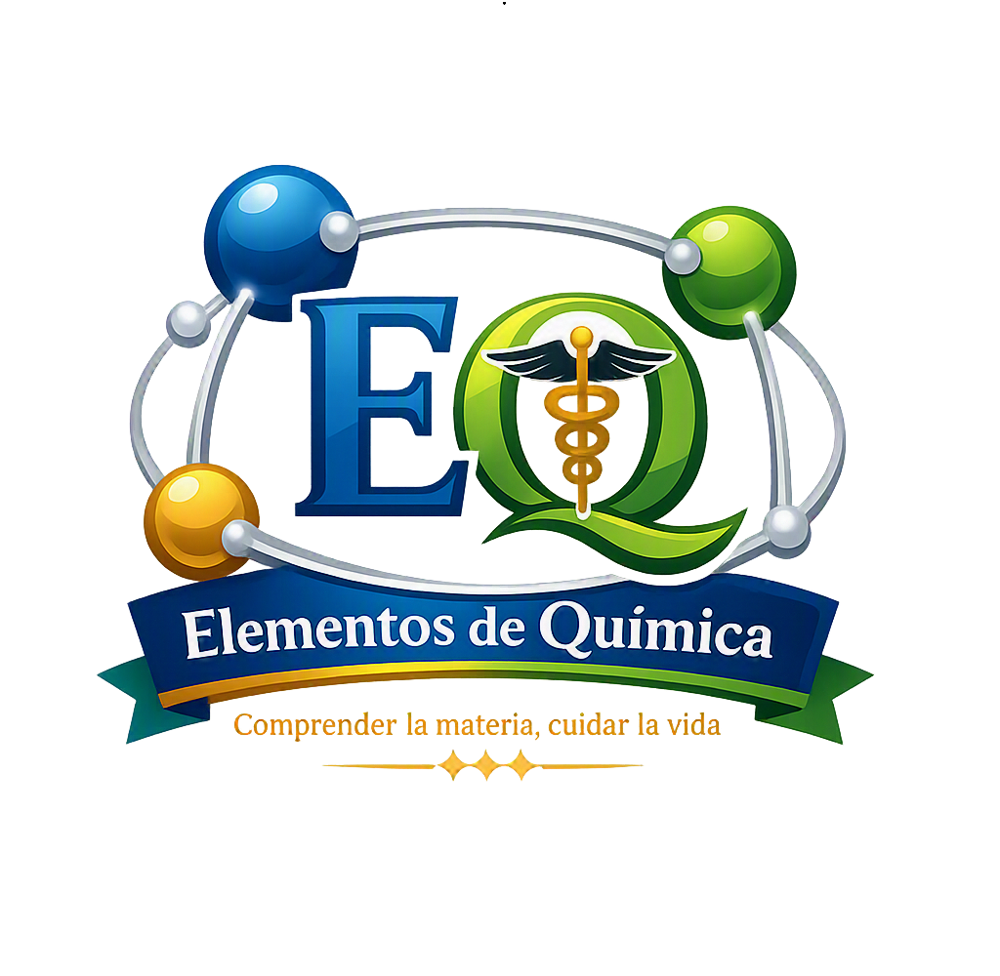
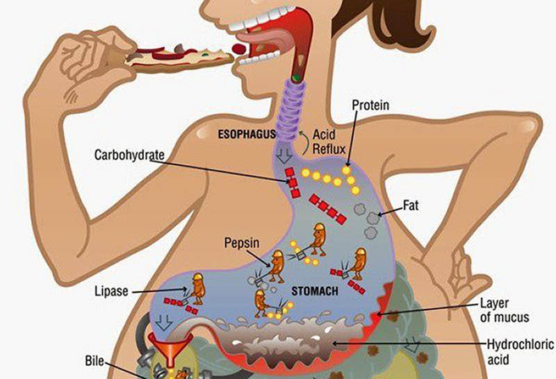
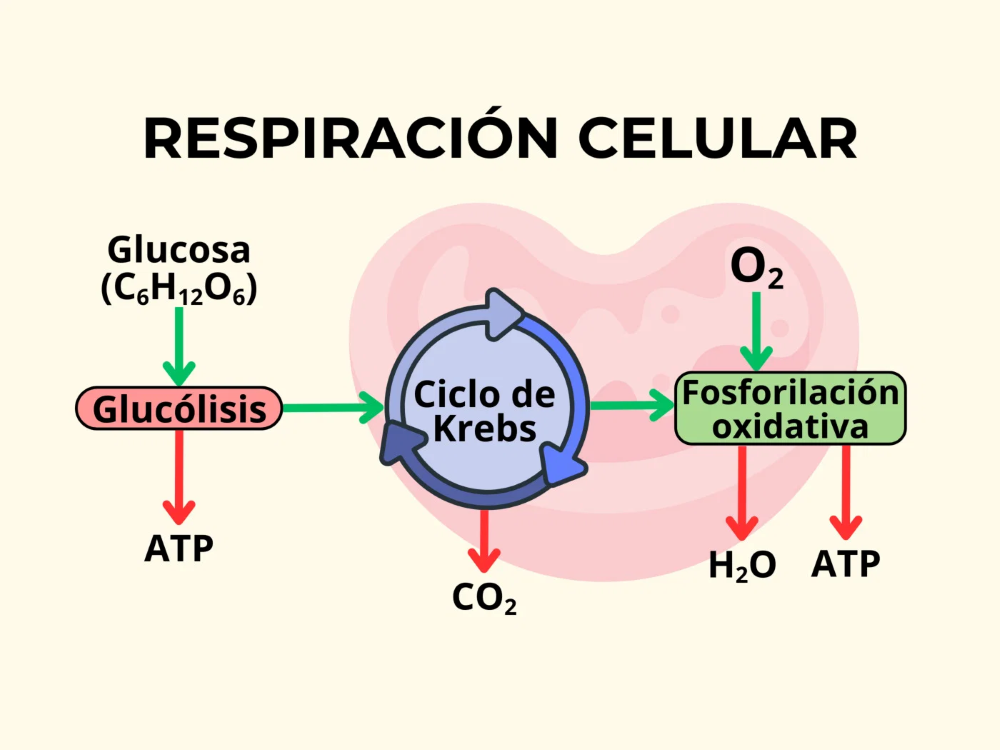
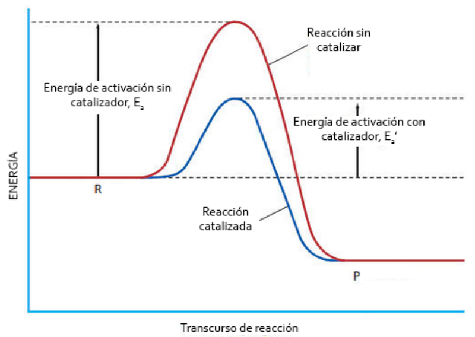
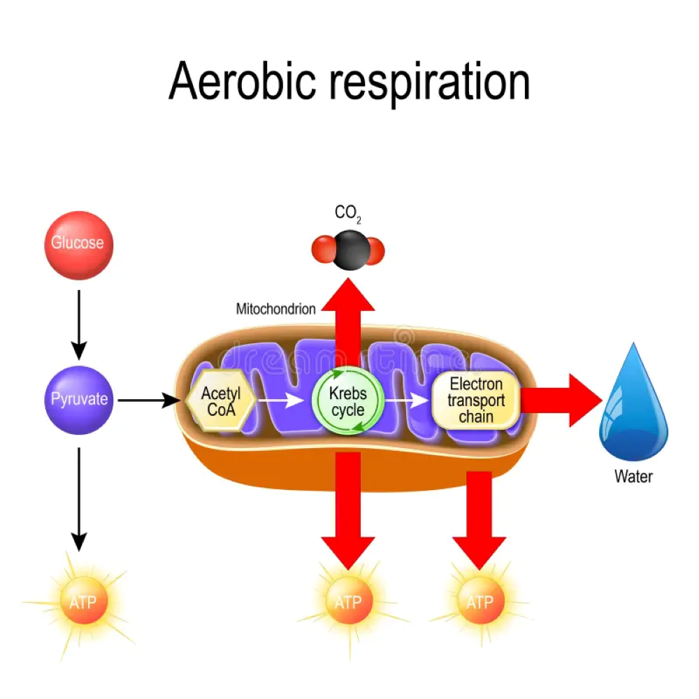
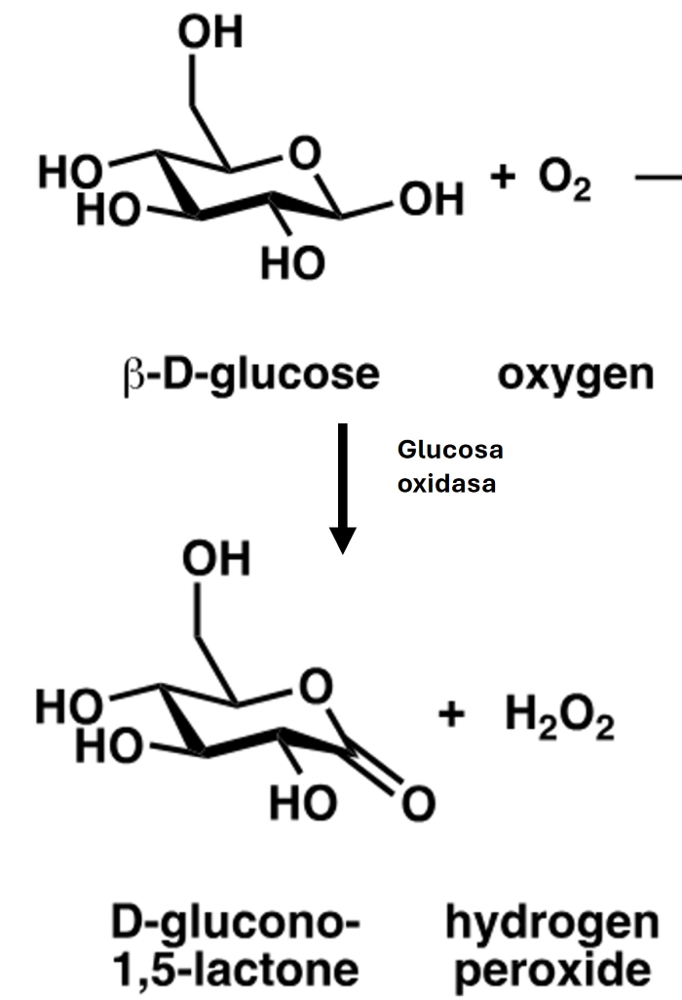
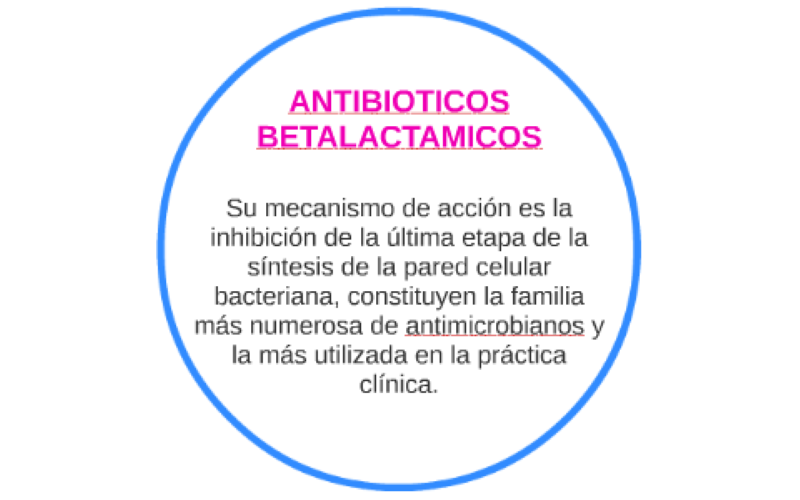

Comprender la materia - Cuidar la vida
Clase 8: Reacciones químicas y velocidad de reacción

Es un proceso en el que una o más sustancias (reactantes) se transforman en nuevas sustancias (productos) mediante la ruptura y formación de enlaces químicos.

Evidencias de una reacción química:
Para que una reacción ocurra, los reactantes deben colisionar eficazmente. Esto requiere:

Representación simbólica de una reacción. Reactantes → Productos. Incluye estados físicos (s, l, g, ac) y coeficientes estequiométricos.
Ley de conservación de la masa: Los átomos no se crean ni se destruyen, solo se reorganizan. La ecuación debe estar balanceada.
Se colocan coeficientes delante de cada sustancia hasta igualar el número de átomos de cada elemento en ambos lados.
Practica con ejercicios de la clase.
Mide qué tan rápido se consumen los reactantes o se forman los productos. Se expresa en mol/L·s (M/s).
Velocidad media: Variación de concentración en un intervalo de tiempo.
| Factor | Efecto | Ejemplo en salud |
|---|---|---|
| Naturaleza de reactantes | Reacciones iónicas son más rápidas que moleculares. | Los iones en soluciones fisiológicas reaccionan rápido. |
| Estado físico | Gases y soluciones reaccionan más rápido que sólidos. | Los fármacos en solución actúan más rápido. |
| Concentración | A mayor concentración, mayor velocidad (más colisiones). | Medicamentos con mayor concentración tienen efecto más rápido. |
| Temperatura | Al aumentar la T, aumenta la energía cinética y la velocidad. | La fiebre puede acelerar reacciones metabólicas. |
| Presión | Afecta a gases: a mayor presión, mayor velocidad. | En ventilación mecánica, la presión afecta el intercambio gaseoso. |
| Catalizadores | Disminuyen la energía de activación y aumentan la velocidad. | Las enzimas son catalizadores biológicos (ej. amilasa, lactasa). |
Haz clic en cada nodo para desplegar u ocultar sus ramas.
Haz clic en la tarjeta para voltearla y ver la respuesta. Luego califícate con honestidad.
Ingresa una ecuación química (ej. "K + H2O -> KOH + H2") y presiona "Verificar".
Escribe con espacios entre sustancias y usa -> para la flecha.
Para la reacción A → B, ingresa la concentración inicial y final de A (mol/L) y el tiempo (s).
Las reacciones químicas y su velocidad son fundamentales en la práctica clínica. Aquí tienes ejemplos concretos y sencillos:



Recuerda las tres condiciones: colisiones, energía de activación y orientación.
Los factores que aumentan la velocidad: concentración, temperatura, catalizadores (y presión para gases).
Orden para balancear por tanteo: primero metales, luego no metales (excepto H y O), luego H y O, y al final el elemento que aparece solo.
Haz clic en cada término para ver su definición:
Error: Cualquier choque entre moléculas produce una reacción.
Error: Creer que el catalizador se consume en la reacción.
Error: Pensar que la velocidad es independiente de la temperatura.
Error: Cambiar subíndices en lugar de coeficientes para balancear.
Error: Ver las reacciones como algo abstracto y no aplicarlo a procesos clínicos.
Se mostrarán 10 preguntas al azar de un total de 30. Al finalizar, podrás cargar una nueva ronda.